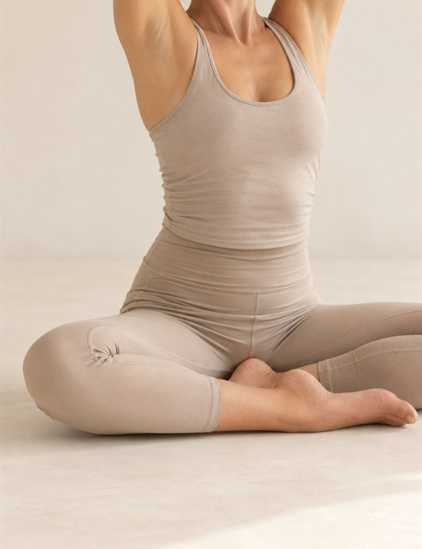
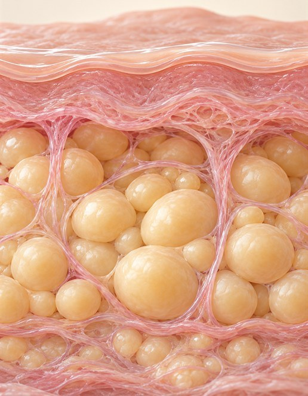
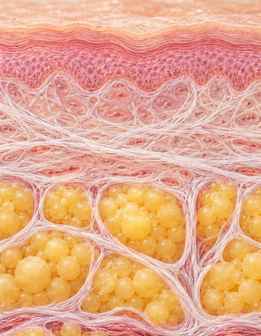
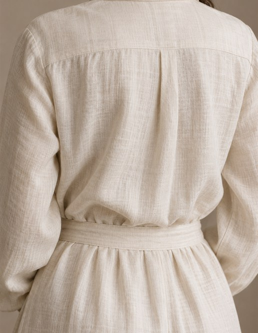
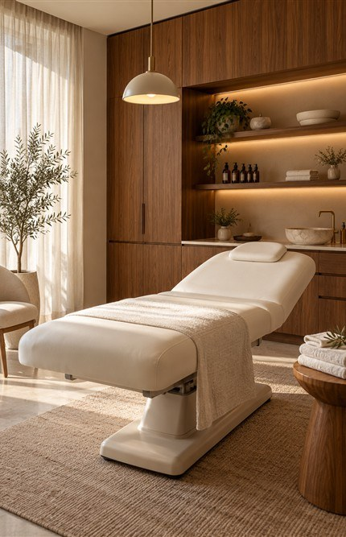
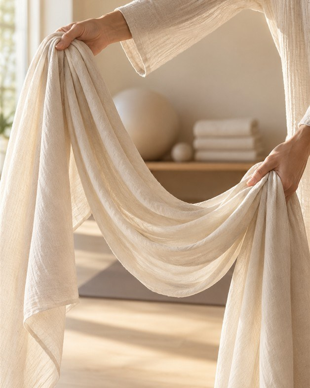
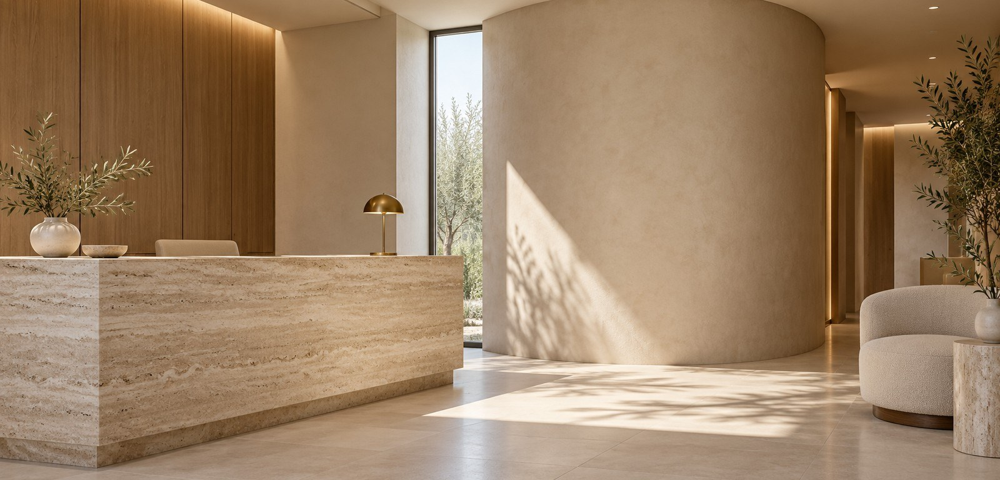

바디윤곽관리
덜어내는 방법에도 기준이 필요합니다
피하지방층에 고주파를 적용해 과한 부피를 정돈하고 몸의 윤곽을 매끄럽게 다듬는
세일룬의 시그니처 프로그램입니다.
Contour Care
사이즈가 줄어든 뒤의 윤곽까지 함께 계획합니다
바디 관리는 줄이는 양보다 시술 뒤 몸에 남을 균형과 질감을 함께 생각해야 합니다.
바디윤곽관리는 피부와 근막, 주변 조직의 관계를 함께 살피면서
피하지방층에 고주파 에너지를 전달해
몸의 부피를 조절하면서 윤곽의 경계가 고르게 이어지도록 돕습니다.

신체 구조를 보존하며 필요한 정도만 덜어냅니다.
볼륨을 덜어낼 때에도 주변 조직의 부담과 관리 뒤 이어질 변화를 함께 살핍니다.
세일룬은 지방층의 두께와 모인 위치, 피부를 받치는 힘과 근막의 특성을 함께 보고
어느 층에 얼마나 넓게 에너지를 적용할지 정합니다.
체중계의 숫자만 낮추는 데 머물지 않고, 피부결과 윤곽선이 매끄럽게 이어지는 결과를 지향합니다.
Contour Care
바디윤곽관리란
피부 표면만 자극하는 일반 고주파와 달리,
피부 밑 지방층에 열에너지를 적용하는 방식으로 구성한 바디 관리입니다.
국소적으로 쌓인 지방층의 부피를 정돈하며,
경계가 무거워 보이는 몸의 윤곽을 고르게 정돈합니다.
부위마다 다른 지방의 두께와 조직의 반응을 확인한 뒤 깊이와 에너지 세기를 맞춥니다.
바디윤곽관리 세 가지 변화

Reduce
필요 이상으로 쌓인 지방층과 부피를 덜어 윤곽을 정돈하는 데 도움을 줍니다.

Preserve
근막뿐 아니라 그 주변 층에도 자극이 어떻게 전달될지 살핍니다.

Refine
몸의 각 부분이 급격한 경계 없이 이어지는 윤곽을 생각합니다.
바디라인을 다루는
세일룬의 기준이 시작된
프로그램
바디윤곽관리는 절개 부담을 줄이면서 피하지방의 부피와 주변 조직을 함께 살피려는 접근에서 출발했습니다.
세일룬의 초기 대표 프로그램으로, 축적된 진료 경험을 바탕으로 부위별 깊이와 자극의 기준을 세밀하게 정리했습니다.

CONTOUR CARE
같은 부위라도 변화의 원인에 따라
접근은 달라집니다

부피 조절이 우선인 부위와 부기·셀룰라이트가 두드러진 부위는 서로 다른 프로그램을 검토합니다.
조직이 놓인 자리와 긴장의 차이까지 살펴야 할 때는 근막수기관리를 함께 고려합니다. 세일룬은 지방 분포와 피부·근막 컨디션에 맞춰 필요한 관리를 조합합니다.
이런 분께 권합니다
- 피부 속 지방이 일부 부위에 집중돼 부피가 신경 쓰이는 분
- 몸을 관리할 때 절개나 수면마취의 부담을 줄이고 싶은 분
- 몸의 부피와 윤곽의 굴곡을 동시에 정돈하고 싶은 분
- 셀룰라이트와 부종을 함께 관리하고 싶은 분
- 조직 반응을 확인하며 순차적으로 관리받고 싶은 분
바디윤곽관리 진행 과정
-
컨디션 체크
부위별 지방의 두께와 분포,
피부 탄력과
조직 상태를 확인합니다. -
적용 범위 설정
줄이고 싶은 볼륨과
바디라인을 고려해 에너지의 깊이와
범위를 결정합니다. -
고주파 에너지 전달
피하지방층을 중심으로
필요한 부위에 고주파 에너지를
세밀하게 적용합니다. -
반응 확인
시술 후 열감과
피부 반응을 살피고
다음 시술의 범위와 간격을 정합니다.
외형을 바꾸는 과정에서도 몸이 받는 부담을 함께 살핍니다.
부피를 조절한 뒤에도 피부와 안쪽 조직이 고르게 연결되도록.
바디윤곽관리는 사이즈의 변화뿐 아니라
관리 이후에 이어질 윤곽까지 고려하는 세일룬의 대표 과정입니다.
겉으로 비슷한 부위도 조직의 반응과 당겨지는 방향은 각자 다르게 나타납니다.
일률적인 동작을 되풀이하지 않고, 그날의 몸 상태에 맞는 방향과 자극의 세기를 정합니다.
신체가 부담 없이 편안한 균형을 찾도록,
세일룬은 겉으로 드러난 변화가 어디에서 비롯됐는지부터 확인합니다.
SAELUNE SKIN CLINIC
방법은 달라도, 기준은 하나입니다.
무리한 변화를 남기지 않고 몸의 균형을 먼저 살피는 것, 세일룬의 모든 진료는 여기서 출발합니다.

Now, Saelune